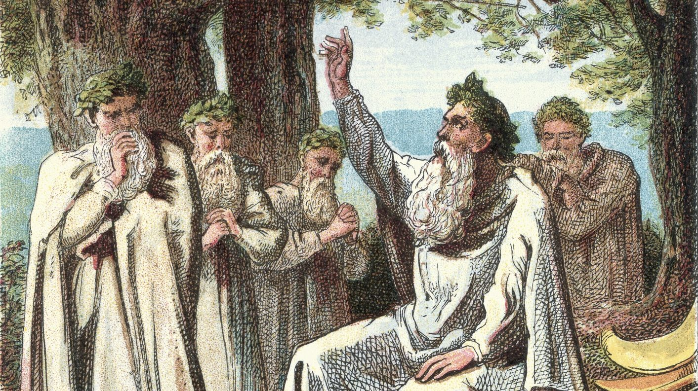
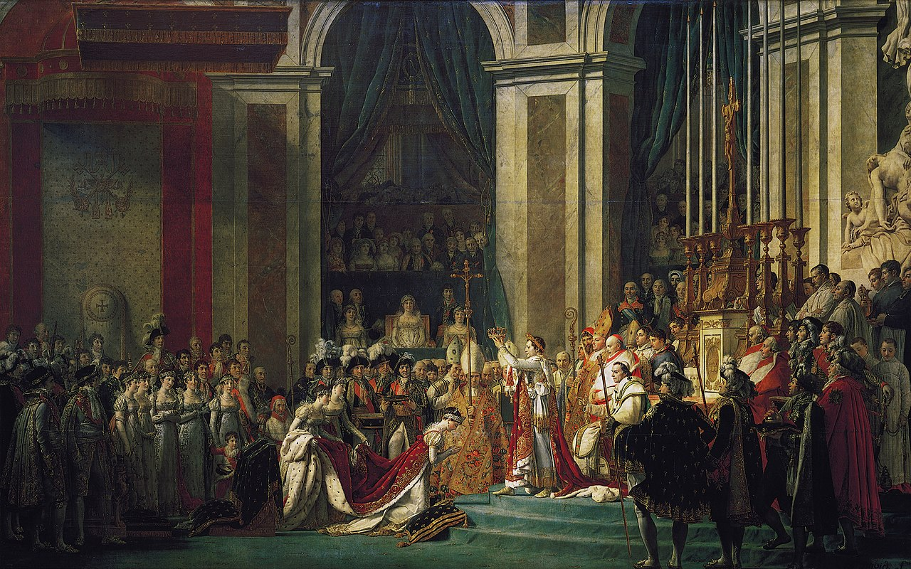
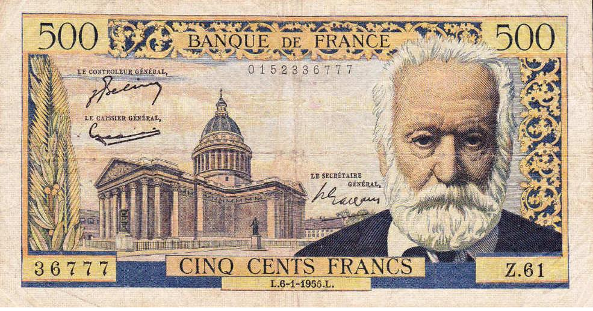
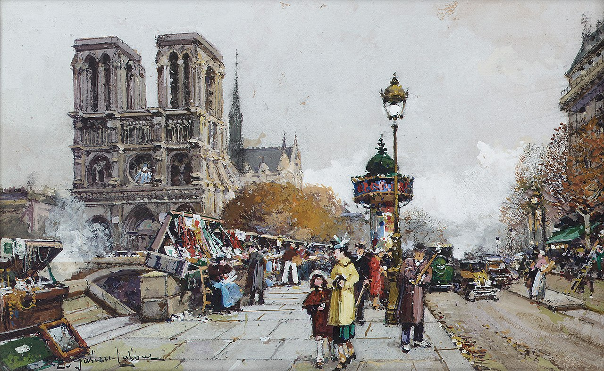
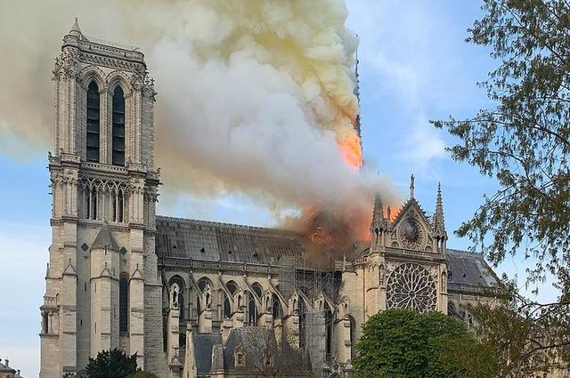

Недавний пожар в Нотр-Даме – большая грусть как для туристов, так и для тех, кто просто сопереживает сохранности объектов всемирного наследия ЮНЕСКО, сидя у себя дома.
Но когда речь идет о таком историческом монстре, как Нотр-Дам, заставшем более 850 лет истории в центре одной из самых бурных по событиям мировых столиц, всегда стоит смотреть на перспективу. Дальше одного туристического сезона, двух, пяти или даже десяти. Хотя, конечно, лучше бы они отремонтировали его быстрее.
А сегодня давайте вспомним, как Нотр-Дам появился на карте Парижа и почему стал столь дорог людям по всему миру.
Свято место пусто не бывает
Как и многие соборы во Франции, земле щедрой, красивой и заселенной очень давно, Нотр-Дам далеко не первое культовое сооружение. До него тут стоял римский Храм Юпитера, а до него, скорее всего, местные друиды имели там что-то вроде рощицы, где варили зелье силы (как у Астерикса и Обеликса), радостно срезали омелу и гадали по внутренностям лягушек.
Воинственные франки (будущие французы), приняв веру Христа, последовательно воздвигли здесь несколько христианских церквей, которые, по мере роста Парижа, становились все выше, вместительнее и богаче. Новое здание часто строилось на фундаменте старого, а иной раз и из тех же самых камней.
В 12 веке город достиг очередной планки, как и амбиции его светских и духовных властей – в те времена мериться соборами было делом не только богоугодным, но и предельно статусным. Двойная выгода: и божью милость заслужил, и иным владыкам нос утер.
Город созрел для серьезной стройки!
Средневековый долгострой или на шпили нет денег
Считается, что затеял замену старого собора на новый парижский архиепископ де Сюллю. Именно при нем предыдущий храм на месте будущего Нотр-Дама снесли. Архиепископ так болел за проект, что завещал все свои деньги детищу – на них приобрели свинцовую кровлю.
Формальное начало стройки было положено в 1163 году в присутствии короля Франции Людовика VII (набожного мужа баловницы Алиеноры Аквитанской) и самого Папы Римского Александра III.
Оказав бесценную помощь с первым камнем, Папа Римский уехал в солнечную Италию. Парижанам же предстояло еще 200 лет работы.
Почему так долго?
Открыв для себя возможности готической архитектуры, средневековые строители, опьяненные первыми успехами и желая превзойти своих коллег и соперников, редко могли вовремя остановиться.
Меж тем, как бы высоко не вздымались шпили соборов в мечтах создателей, реалии «на земле» были далеки от идеальных. Работа шла с помощью примитивных инструментов и механизмов. Войны, эпидемии и вечная нехватка денег могли в любой момент остановить стройку. Пожар (например, от удара молнии) мог запросто уничтожить работу целого поколения или двух и приходилось начинать все с начала. Случалось, что строители ошибались в расчетах (методы которых были далеки от совершенных), возводимые соборы трескались или даже разрушались.
При строительстве Нотр-Дама сменялись архитекторы, планы. Так, например, башни вышли не симметричными, их достраивали разные люди. Со временем отказались и от шпилей на башнях – дорого, да и смекнули – опасно так высоко городить!
Какой уважающий себя средневековый собор без святых реликвий? Пока строители надрывали спины с кладкой сводов, короли и епископы неустанно работали над наполнением Нотр-Дама достойной святой коллекцией – от фрагментов Тернового Венца Иисуса, гвоздя из распятия, чудесной Стеклянницы с елеем для крещения королей, до мощей святой Женевьевы и Дени.
И пусть строительство видело много затруднений и заняло 200 лет, усилиями целой футбольной команды архитекторов и бесчисленных тысяч рабочих, оно завершилось успехом. К 14-му веку основные работы с собором закончили, хотя ремонт и изменения вносились регулярно.
Революционные деньки и хитрый Наполеон
Французские революционеры, придя к власти в 1789 году, не только отрубили голову королю и выпили некоторое количество аристократической крови, но и принялись менять все сферы жизни общества. Не стала исключением и религия.
Сперва Робеспьер, один из лидеров Революции, решил подзаработать и объявил, что собор взорвут, если все желающие его спасти не заплатят в кассу революции. Пощадив собор, но все еще видя в католичестве опору старого порядка, борцы за новый мир решили распространять внутри собственную, революционную веру. Нотр-Дам стал «Храмом Разума», статуи библейских королей обезглавили (ибо нефиг тут королям с головами делать).
Впрочем, поклонялись Разуму, Богине Свободы и Высшему Существу в Нотр-Даме недолго. Наполеон, который как редиска, только снаружи притворился революционером, на деле оказался закоренелым монархистом и постепенно остановил своих ретивых до перемен товарищей. Потрепанное здание вернули католикам.
Именно под сводами Нотр-Дама корсиканский выскочка (но вовсе не коротышка, как иногда думают) стал императором Франции.
Квазимодо спешит на помощь
К тридцатым годам 19 века Нотр-Дам пришел в полное запустение. И это мало кого беспокоило – тогдашние парижане жили настоящим и не особенно ценили свое прошлое.
Так бы, наверное, собор и снесли, не найдись у него один деятельный и талантливый защитник – Виктор Гюго. Желая привлечь внимание к историческому памятнику и зная куда надавить, он быстренько написал «Собор Парижской Богоматери», где разыграл несчастную любовь цыганки и горбуна на фоне достопримечательности.
Расчет Гюго не просто оправдался, а превзошел все ожидания: роман взорвал головы современников, а особенно – современниц, и раскрыл их кошельки. Поднялся совершенно волшебный, как бы сейчас сказали, хайп. Деньги (краудфандинг!) на ремонт мгновенно нашлись. Собор, как умели в 19 веке, отреставрировали. Благодаря Гюго, Нотр-Дам стал чем-то нарицательным, романтичным и до последнего камешка парижским. Таким, каким мы его знаем.Позже, уже в суетном 20 веке, этот успех будет закреплен легендарным мюзиклом.
20-21 век и бой с машинами
Большую часть 20 века и начало 21 Нотр-Дам провел достаточно скучно. Его главным врагом стала плохая экология. Если немного копоти из трубы соседнего трактира он еще мог пережить, то вот против выхлопов миллионов автомобилей старина и его камни оказались бессильными. Собор начал чернеть и понемногу разваливаться. В 80-е вниз упала даже пара горгулий, к счастью, никого не переправив в лучший мир. Начали крениться декоративные башенки.
С тех пор Нотр-Дам периодически обновляли, но, как любили повторять самые вредные медиевисты, ремонт никогда по-настоящему не успевал за скоростью ветшания собора. Правительство выделяло слишком мало золотых монет... то есть, евро. Кто знает, может быть ворчуны были правы.
Неудачная, мягко говоря, реконструкция и довела Нотр-Дам до беды. 15 апреля 2019 года произошел пожар, свидетелем которого совсем недавно стали современники написания этой статьи.
Но не будем унывать! Пусть Нотр-Дам и ждет сложное восстановление, он к нам вернется.
К тому же, президент Франции Эммануэль Макрон пообещал, что собор будет восстановлен за 5 лет и станет даже краше, чем был. Он ведь не какой-нибудь средневековый король, чтобы обманывать, верно? : )
А пока очень советуем обратить внимание и на другие готические чудеса Франции, которые оказались чуть-чуть в тени своего супер-успешного парижского собрата, но тоже хороши.